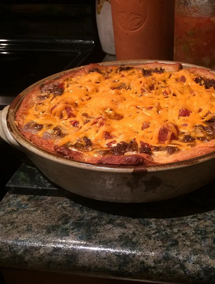

Taco Pie

Description
Tacos meat and fillings meet packaged crescent rolls for an easy dinner that your whole
family will love. Serve with shredded lettuce, salsa, cheese, and sour cream.
Ingredients
- 1 pound ground beef
- 1 (1.25 ounce) package taco seasoning
- 1 (8 ounce) package refrigerated crescent roll dough
- 1 (14 ounce) can refried beans
- 1 cup sour cream
- 1 cup salsa, drained slightly
- 1 ½ cups shredded Cheddar cheese
Steps
-
Preheat oven to 350 degrees F (175 degrees C). Prepare a large deep-dish pie pan with cooking spray.
-
Heat a large skillet over medium-high heat. Break ground beef into small pieces and add to hot skillet; cook and stir until the beef is crumbly and no longer pink, 7 to 10 minutes. Drain and discard any excess grease. Season drained beef with taco seasoning.
-
Press refrigerated dough into the bottom of the prepared pan. Spread refried beans in an even layer onto the dough. Spread sour cream into a layer atop the refried beans. Sprinkle ground beef evenly over the sour cream; top with salsa and Cheddar cheese.
-
Bake in the preheated oven until cheese is melted and bubbly and crust has browned, 25 to 30 minutes.